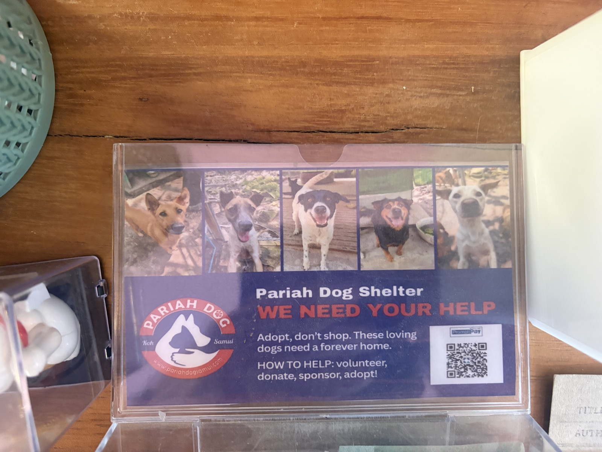

✦ THE NIGHT SHIFT HAS A NEW RECRUIT
Spirit Sweeper✧
One scarecrow. One slightly haunted vacuum.
A whole house of very unusual pets.
A little haunting.
A lot of heart.
Meet Patch, the scarecrow.
Help him tidy up some spirited pets.
Someone let the pets out.
Of the afterlife.
✦ Catch pretend ghosts. Help real paws.
Donate to the shelter ↗YOUR SHIFT, FLOOR BY FLOOR
Every room has roommates.
- 01 / FLOOR 1
The Pawlour
Cats & dogs
- 02 / FLOOR 2
Midnight Pantry
Ducks & mice
- 03 / FLOOR 3
The Flutter Attic
Owls & bats
- 04 / OUTSIDE
Moonmilk Yard
Cows & ducks
- 05 / OUTSIDE
The Last Pasture
Horses & cows
How to clock a good shift +
01 / Face your fears. Move with ← → or A / D. Hold Space to run the vacuum in the direction you face. On a phone use the arrow buttons and hold the ghost button. You can also hold directly on the game to aim the vacuum left or right.
02 / Take your time. Keep a ghost in the glowing beam until it slips into your lantern tank. Let the vacuum cool when its heat bar fills. Jump with Z or the Jump button. Avoid bumping into ghosts; you have three hearts, and recover one after each level.
03 / Take the stairs. Clear the room to unlock the staircase. Walk to its glowing marker and press W / ↑ or the Stairs button. Climb all three floors, then take the back stairs outside. Finish the barnyard and paddock to complete your shift. P / Escape pauses.

A LITTLE KINDNESS GOES BEYOND THE GAME
Enjoyed the game?
Help a real dog.
If Spirit Sweeper made you smile, please consider a donation to Pariah Dog Shelter in Koh Samui. Your support helps provide food, medical care and a safe place for dogs waiting for a home.
- Food & shelter
- Veterinary care
- Rescue & rehoming